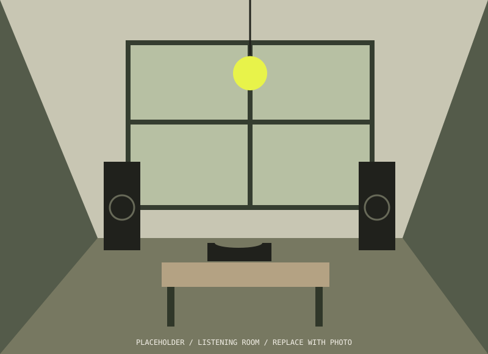

GOOD MUSIC.Wrong PLACE.
Great records. Unlikely rooms.
A night that goes somewhere else.
01 / THE FEELING
Some nights
stay with you.
✳
TO BE THERE.
THAT’S WHAT WE’RE HERE FOR.
We take beautiful sound to places it doesn’t usually belong. An old printworks. A rooftop greenhouse. That room above the corner shop.
No VIP ropes. No endless playlists. Just a selector, a stack of records, and a room full of curious people.
A DIFFERENT WAY TO GO OUT ↗02 / ON THE TURNTABLE
Next up↙
SMALL ROOMS. BIG FEELINGS.
FIND YOUR FREQUENCY.
A FICTIONAL PROGRAMME FOR REAL MUSICAL CURIOSITY.
03 / HOUSE RULES (SORT OF)
NOT ANOTHER NIGHT OUT.
A WAY TO SWITCH ON.
Drop the needle.
Lift the room.
- 01
Leave the feed at the door.
Be here. The internet will still be there later.
- 02
Listen outside your lane.
Your next favourite record is probably a surprise.
- 03
Make room for someone.
Come solo. Leave with a new recommendation.
04 / NOTES FROM THE FLOOR
THE OFFBEAT JOURNALFor the
For the
record.
Little discoveries from
the spaces between tracks.
05 / KEEP THE CONVERSATION GOING
GOT A SPACE? A RECORD?
A SLIGHTLY STRANGE IDEA?